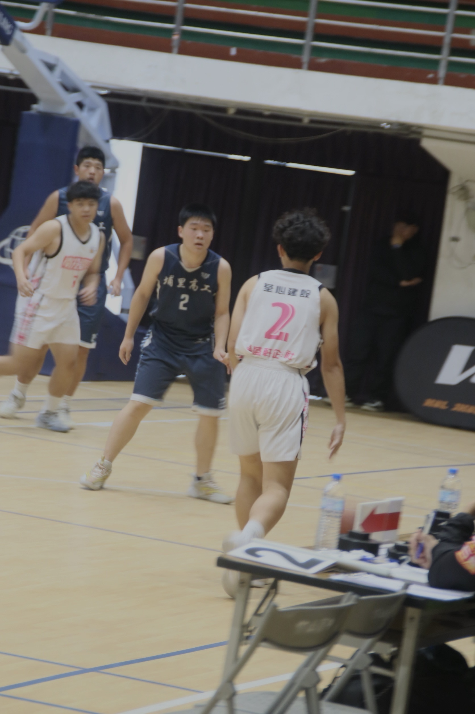
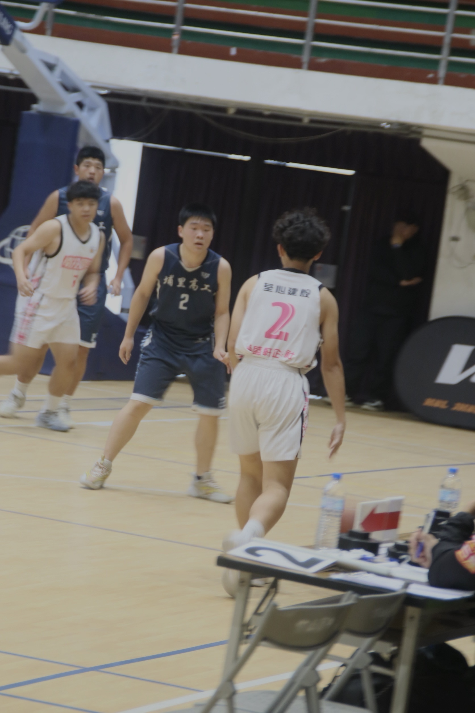

設計者：陳漢庭
班級座號：電商二20號
聯絡方式：311020@ntsh.ntct.edu.tw
本學期學習心得
這學期的網頁設計課程讓我收穫良多。從一開始對程式碼感到陌生，到現在可以來自己設計屬於自己的網站，雖然還是沒有做得很好。
在製作這個形象網站的過程中，每次老師再帶著我們做網站時，都必須非常的認真，但最後做出來時，成就感真的滿滿

班級座號：電商二20號
聯絡方式：311020@ntsh.ntct.edu.tw
這學期的網頁設計課程讓我收穫良多。從一開始對程式碼感到陌生，到現在可以來自己設計屬於自己的網站，雖然還是沒有做得很好。
在製作這個形象網站的過程中，每次老師再帶著我們做網站時，都必須非常的認真，但最後做出來時，成就感真的滿滿